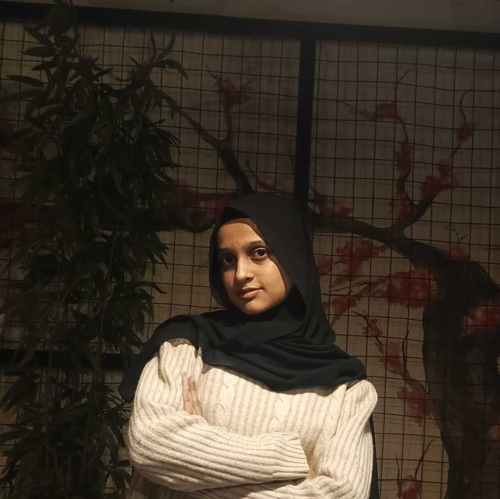

Computer Engineering undergraduate at NUST CEME exploring AI/ML, biomedical technology, medical imaging, and embedded systems. I enjoy turning engineering concepts into practical projects and building solutions at the intersection of intelligent computing, healthcare, and hardware.

Ayesha Zafar
NUST CEME · Computer Engineering
Bridging engineering fundamentals with interdisciplinary problem-solving
I am a Computer Engineering undergraduate student at NUST College of Electrical and Mechanical Engineering (CEME), currently in my 5th semester. My core academic drive is centered on understanding how hardware and intelligent software integrate to solve meaningful human problems.
Rather than limiting myself to a single narrow domain early in my career, I am intentionally utilizing my undergraduate years to develop a grounded engineering foundation across computer architecture, embedded systems, data structures, and algorithms, while actively exploring emerging areas in medical imaging, biomedical AI, and intelligent systems.
I enjoy serving as a bridge between technical disciplines. My long-term goal is to pursue a Master's degree abroad, contributing to interdisciplinary research initiatives that apply engineering to healthcare, diagnostics, and real-world technology challenges.
Early research internships, projects, and incoming volunteer initiatives
Supervisors: Dr. Usman Akram, Dr. Asad Mansoor Khan, Dr. Anum Abdul Salam
Research Focus: Evaluation of medical image foundation models for disease segmentation in Chest X-Ray (CXR) imagery using VinDr-CXR dataset.
My Contributions: Designed and implemented preprocessing pipelines for DINOv3; handled InSID3, MedSAM, MedSAM3, and SAM3 frameworks. Converted DICOM files to PNG format and created binary masks for ground-truth segmentation.
Project: AI-Driven Multimodal Behavioral Biomarkers for Early Detection of Mild Cognitive Impairment.
Context: Participating as a research volunteer in a major funded healthcare research initiative (~16M PKR) focusing on leveraging multimodal datasets for early biomarker identification and cognitive diagnostics.
Study Context: Investigated the impact of concise (micro) versus detailed (macro) AI-generated explanations on the cognitive load and short-term knowledge retention of university students.
Methodology & Findings: Conducted a controlled experiment involving ~30 participant observations within a broader ~100 student cohort study framework. The empirical findings supported our initial hypothesis: micro explanations resulted in measurably lower self-reported cognitive load and improved immediate comprehension outcomes.
Engineering implementations across computer architecture, systems, and algorithms
Designed and implemented a custom 32-bit single-cycle RISC processor supporting I-type, R-type, Branch, Load, and Store instructions with multiplication support.
Engineered an object-oriented multi-drone formation simulation modeling quadcopter kinematics, position feedback loops, dynamic navigation controllers, boundary constraint handling, and telemetry logging.
Developed a dynamic city traffic simulation utilizing graph representations to model road networks. Implemented Dijkstra's shortest-path algorithm for real-time route optimization and dynamic congestion modeling.
Created a lightweight C++ console utility analyzing character entropy, length constraints, category distribution, and basic security rule-checking to output structural feedback on user inputs.
NUST College of Electrical and Mechanical Engineering (CEME)
NUST College of Electrical & Mechanical Engineering (CEME), Rawalpindi
Expected Graduation: Aug 2028
Honest proficiency breakdown based on academic & practical exposure
Demonstrated organizational progression and extracurricular contributions
Promoted to executive deputy directorship following successful event execution during COMPPEC '25.
Managed administrative support, venue coordination, and promotional outreach for the flagship project exhibition.
Led media campaigns for community fundraising initiatives and student support activities.
3-week tenure as media lead.
German Language: Completed A1.1 coursework; awarded a funded competitive seat for A2 & B1 program progression.